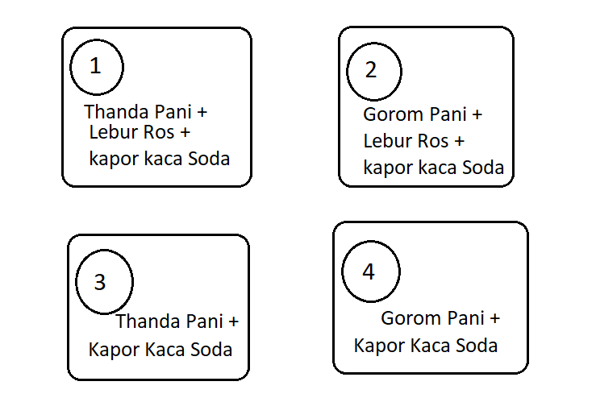

1. পাউরুটি ফোলাতে সাহায্য করে নিচের কোনটি?
- Na2CO3
- NaHCO3
- CH3COOH
- ইস্ট
2. আমাদের দেশে যে পদ্ধতিতে লবণ সংগ্রহ করা হয়?
- সল্ট মাল্টিকাস্টিং
- সল্ট মাল্টিভেস্টিং
- স্যার আমি পড়ি নাই
- সল্ট হারভেস্টিং
3. নিচের কোনটি বেকিং পাউডার তৈরির উপাদান নয়?
- CO2
- NH3
- টারটারিক এসিড
- সম্পৃক্ত NaCl
- কোনটিই নয়
4. নিচের কোনটি ভিনেগারের সংকেত?
- ৮ -১০ % CH3COOH
- 40% HCOOH
- 4 - 10 % CH3COOH
- 10% HCHO
5. খাবার সংগ্রহ করে রাখতে নিচের কোনটি ব্যাবহার করা যেতে পারে?
- সোডিয়াম ক্লোরাইড
- ভিনেগার
- সোডিয়াম কার্বনেট
- সোডিয়াম হাইড্রোক্সাইড
6. কাপড় কাচা সোডার রাসায়নিক সংকেত কি?
- Na2CO3
- NaHCO3
- CH3COOH
- Na2CO3.10H2O
7. টয়লেট ক্লিনারের প্রধান উপাদান কি?
- HCl
- NaOCl
- NaOH
- H2SO4
9. H2O2 এ O এর জারণ সংখ্যা কত?
- -1/2
- +1/2
- -1
- -2
9. K4Fe(CN)6 এ O এর জারণ সংখ্যা কত?
- -2
- +2
- -3
- +3
10. নিচের কোনটি সঠিক নয়?
- N2 + 3H2 = 2NH3 → সংশ্লেষণ বিক্রিয়া
- NaCl + AgNO3 = NaNO3 + AgCl ↓ - অধঃক্ষেপণ বিক্রিয়া
- 2H2 + O2 = 2H2O → দহন বিক্রিয়া
- CaCO3 → Cao + CO2 - সংযোজন বিক্রিয়া
11. প্রশমন বিক্রিয়ায় প্রশমন তাপ কত?
- + 57.3 kj
- - 57.3 kj
- + 92 Kj
- - 92 kj
12. AlCl3 + H2O → Al(OH)3 + 3HCl; বিক্রিয়াটি একটি,
- আদ্রবিশ্লেষণ বিক্রিয়া
- পানি বিশ্লেষণ বিক্রিয়া
- অধঃক্ষেপণ বিক্রিয়া
- সমাণুকরণ বিক্রিয়া
13. ইউরিয়ার সংকেত কি?
- NH4CNO
- N2H-CO-N2H
- NH3
- H2N-CO-H2N
14. n(CH2=CH2) → (-CH2-CH2-)n ; এই বিক্রিয়াটি ঘটার উপযুক্ত পরিবেশ কি?
- প্রভাবক N2, 200°C তাপমাত্রা, 1200 atm চাপ
- প্রভাবক O2, 1200°C তাপমাত্রা, 200 atm চাপ
- প্রভাবক Fe, 200°C তাপমাত্রা, 1200 atm চাপ
- প্রভাবক O2, 200°C তাপমাত্রা, 1200 atm চাপ
15. মরিচার সংকেত কি?
- Fe3O4
- FeO.nH2O
- Fe2O3.nH2O
- Al2O3.nH2O
16. কোনটি সঠিক?
- Fe ধাতু Cu ও Al অপেক্ষা বেশিদিন টেকে
- মৌমাছি ও পিঁপড়ার হুলে একধরণের ক্ষারক থাকে
- শ্বসনে উৎপন্ন হয় অক্সিজেন গ্যাস ও বিপুল শক্তি
- Na ধাতু কেরোসিনের নিচে রেখে সংরক্ষণ করা হয়
17. এন্টাসিডের প্রধান উপাদান কোনটি?
- Al2O3
- HCl
- Mg(OH)2
- Both A and C
18. বালির সংকেত কি?
- SiO2
- KCl
- Pb3O4
- N2O
19. ভিনেগারের সংকেত কি?
- 4-10% CH3COOH
- 40% CH3OH
- 4-10% C2H5OH
- CH3-COOH
20. নিচের কোনটি প্রতিস্থাপন বিক্রিয়া?
- 2H2 + O2 → 2H2O
- CaCO3 → CaO + CO2
- AgNO3(aq) + NaCl(aq) → AgCl(s) + NaNO3(aq)
- Zn + H2SO4 → ZnSO4 + H2
21. অধিক সক্রিয় ধাতুর উপর কম সক্রিয় ধাতুর প্রলেপ দেয়াকে কি বলে?
- ভলকানাইজিং
- গ্যালভানাইজিং
- ইলেকট্রোপ্লেটিং
- জানি না স্যার

22. উদ্দীপকের কোন পাত্রে সবচেয়ে বেশি পরিমাণ বুদবুদ উৎপন্ন হবে?
- 1
- 2
- 3
- 4
23. N2 + 3H2 → 2NH3; উভমূখী বিক্রিয়াটি সাম্যবস্থায় থাকাকালে তাপ প্রয়োগ করলে সাম্যের অবস্থা কিরূপ হবে?
- বিক্রিয়াটি বামদিকে অগ্রসর হবে
- বিক্রিয়াটি ডানদিকে অগ্রসর হবে
- NH3 উৎপাদন বাড়বে
- আমার দাদী জানেন, দাদীকে জিজ্ঞেস করতে হবে
24. সাম্যাবস্থায় থাকা কালে নিচের কোন উভমূখী বিক্রিয়াটির ক্ষেত্রে চাপের প্রভাব আছে?
- N2(g) + O2(g) = 2NO(g)
- 2Pb(s) + O2(g) = 2PbO
25. ZnO + C = Zn + CO; কোনটি বিজারক? (***)
- ZnO
- C
- Zn